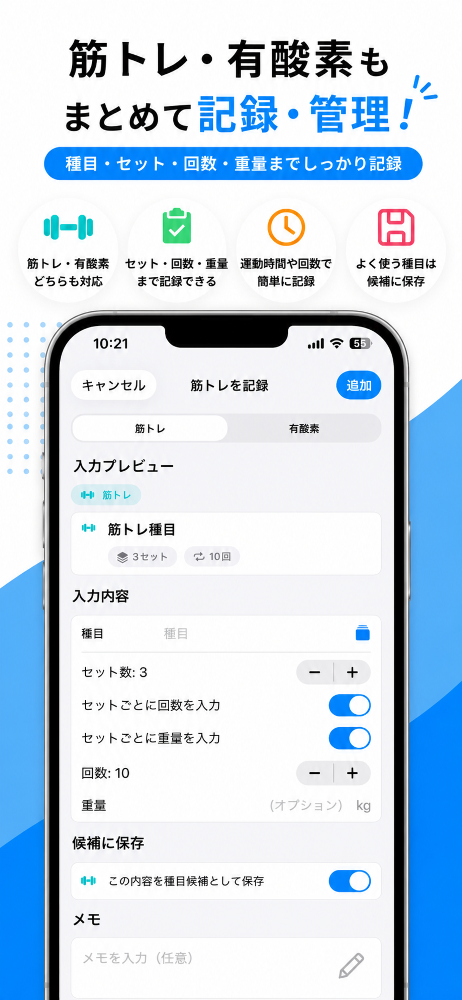

ボディメモとは？
ボディメモは、 食事・カロリー・筋トレ・有酸素運動を ひとつのアプリでまとめて記録できる 健康管理アプリです。
ダイエットや健康維持を 無理なく続けられるよう、 シンプルで分かりやすい操作性を 目指しました。 毎日の小さな積み重ねが、 理想の身体づくりと健康維持を サポートします。
主な機能
🍽 食事・カロリー記録
食事内容とカロリーを簡単に記録できます。 目標カロリーを設定し、 毎日の摂取状況を確認できます。
💪 筋トレ記録
種目・セット数・回数・重量を記録し、 日々のトレーニングを管理できます。
🏃 有酸素運動記録
ウォーキングやランニングなどの 有酸素運動を簡単に記録できます。
📈 グラフ表示
過去7日間のカロリー推移をグラフで表示し、 毎日の変化を分かりやすく確認できます。
📅 カレンダー管理
毎日の記録をカレンダーで確認できます。 目標カロリーを達成した日は お祝いマークが表示されます。
⭐ 候補保存
よく使う食事や運動を保存し、 ワンタップで素早く入力できます。
こんな方におすすめ
- ダイエットを始めたい
- 健康管理を習慣化したい
- 食事と運動をまとめて管理したい
- 筋トレを継続したい
- シンプルで使いやすいアプリを探している
スクリーンショット



プライバシー
食事や運動の記録は端末内に保存されます。 アカウント登録は不要です。 クラウドへのデータ同期は行いません。
今すぐ始めよう
ボディメモで、 毎日の健康管理をもっと簡単に。
App Storeでダウンロード